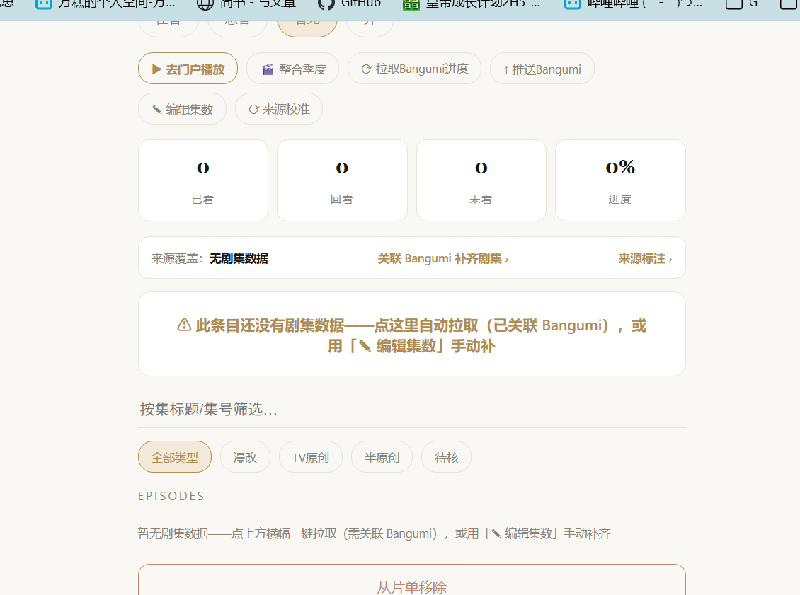
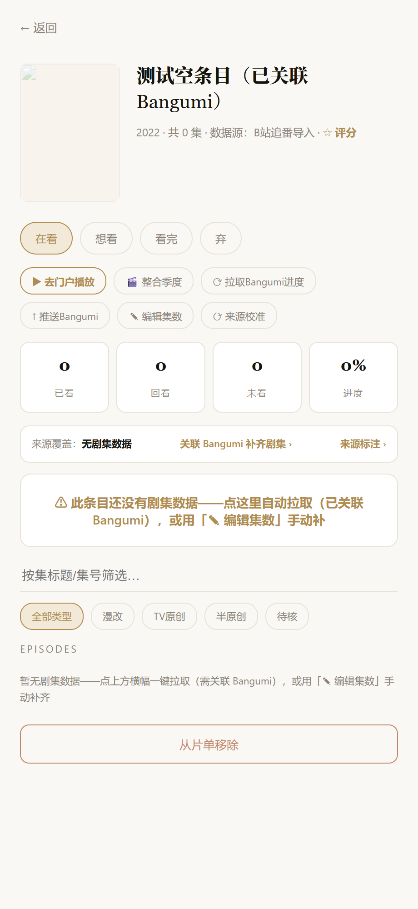
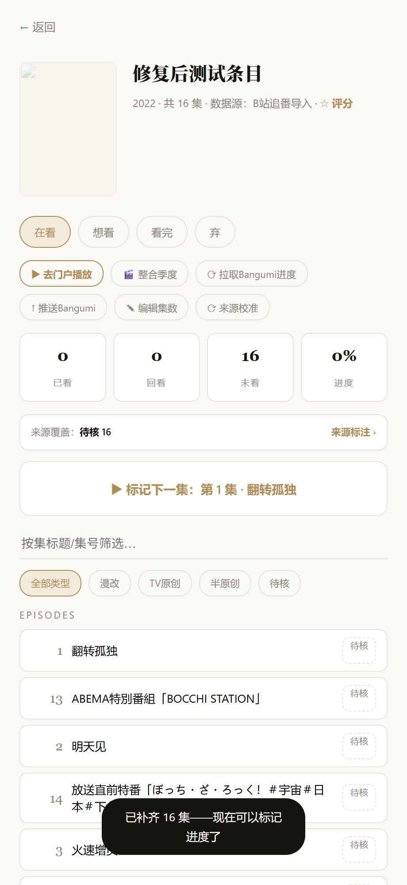
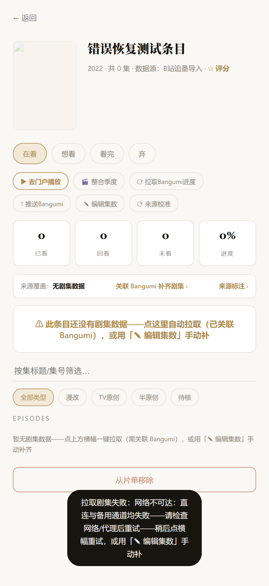
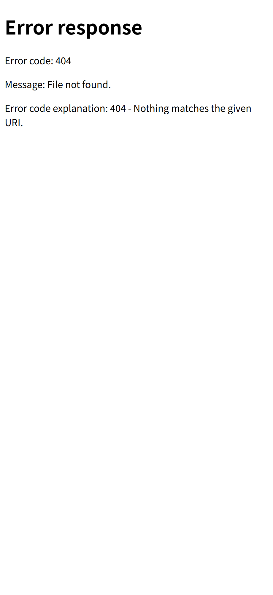
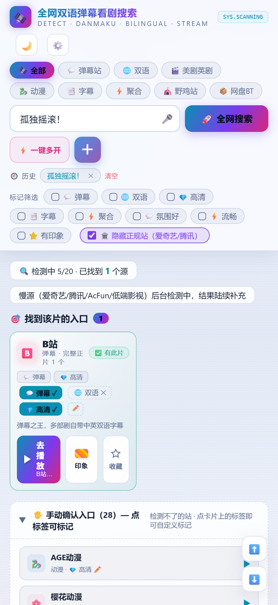
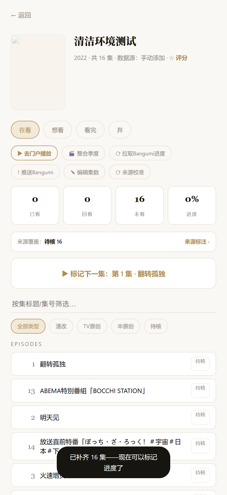
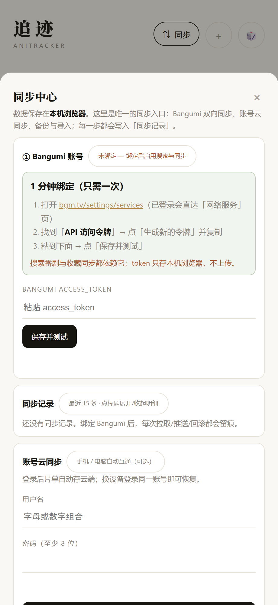

AniTracker 追迹
“整个项目是否存在很大问题”——系统性复盘、修复与验证的完整报告
01核心结论
用户提问原文：“还是用不了……整个项目是否存在很大问题？”
结论：不存在结构性大问题。“用不了”由 4 处局部工程缺陷叠加所致——失败后整页粘死、失败等待过久且提示不清、拉取无持续反馈、门户按钮跳 404——全部已修复，并经 7 组浏览器实测复验通过。建议路径：继续使用、小步维护（无需重建）。
这个项目值得担心的点在哪里？
本项目的技术形态是「单文件 HTML 应用 + 零依赖 Python 静态服务器」，数据保存在浏览器 localStorage（可选云同步）。这类形态最容易被三类问题咬住：连接韧性（对外部数据源断一次的恢复能力）、缓存一致性（改完看不到、要强刷）、反馈缺失（慢/失败时界面没反应，被误判为“坏了”）。本次体检逐一压测了这三类，并额外覆盖了双实例、端口占用、干净环境复现与回滚。
结论的另一半同样重要：核心链路是健康的——数据模型与持久化可靠、缓存机制（So network-first + 禁止启发式缓存）设计正确、异常恢复路径完备。此前多次“修了还是用不了”，根因不是“没修对”，而是修复没有覆盖到“失败后的恢复”这一环：一次网络抖动会把页面打进“永久降级”状态，直到手动刷新为止。本次修复的正是这最后一环。
02问题分级与修复成本
| 级别 | 含义 | 数量 | 修复成本估算（单人） |
|---|---|---|---|
| 高 阻断使用 | 功能直接不可用或结果误导，需立刻处理 | 2 项 | 约 1 人日（含诊断） |
| 中 体验受损 | 可用但容易让用户误判“坏了” | 2 项 | 约 0.5 人日 |
| 低 卫生问题 | 不影响主流程，长期积累会添乱 | 4 项 | 约 0.5 人日 |
| 信息 特性说明 | “看起来像问题”的设计行为，需文档化 | 3 项 | 随文档完成 |
| 合计 | 本轮全部完成（修复 + 全量复验） | 11 项 | 折算约 2 人日 |
成本口径：单人完成“复现 → 定位根因 → 修复 → 单项复验 → 全量回归”的净工作时间；不含本次报告与文档工程。
03问题清单（R1–R11）
每项含根因一句话与实测证据引用（上标 [E#] 指向文末证据索引）。修复补丁与问题编号的逐条映射见《变更日志-问题对照》。
| 编号 | 级别 | 问题与根因 | 触发条件 | 状态 |
|---|---|---|---|---|
| R1 | 高 | 失败后整页“禁用直连”的粘性状态。根因：网络类错误一次即写入全局标记且永不恢复，网络修好后重试仍走已失效的兜底通道。[E2] | 任一次直连超时 / 网络抖动之后 | 改为零粘性：每次先直连 |
| R2 | 高 | 失败路径漫长且不可用。根因：直连超时仅 3 秒；兜底用的两个公共 CORS 代理实测全部不可达（HTTP 000），失败最多空等约 27 秒。[E2] | 冷启动 / 慢节点；未开代理时 | 8s 直连上限 + 6s×2 短兜底 |
| R3 | 中 | 拉取期间无持续反馈。根因：仅 2.2 秒 toast，之后到失败/成功前界面毫无动静，被误判“点了没反应”。[E4] | 网络慢或失败时 | 横幅锁定“正在拉取…” |
| R4 | 中 | “去门户播放”跳 404。根因：按钮用相对路径 /search/，在 8089 直开时落到服务器 404 错误页；未接入项目现成的网关基址变量。[E7] | 任意条目点该按钮 | GW 基址 + 未启动提示 |
| R5 | 低 | favicon.ico 404。页面未声明图标、目录无图标文件——每次打开控制台都有一条 404。* | 每次打开页面 | icon 声明 + 图标文件 |
| R6 | 低 | 8089 双实例并存（双绑定）。快速连点启动器两次会出现两个服务进程同时监听（日志实测），端口与日志状态混乱。* | 启动器被连续触发两次 | 启动前探活守卫 |
| R7 | 低 | 旧启动脚本与现行流程不一致。“启动-本地服务器.bat”指向裸 http.server：无 no-cache 头、无空闲自退——误用会把缓存类问题原样带回来。* | 用户误用旧脚本时 | 委托新版一键启动 |
| R8 | 低 | 封面缓存走已失效的代理。cacheCover 强制经 proxy.cors.sh；实测 lain.bgm.tv 本身带 CORS 头可直连。* | 添加番剧缓存封面时 | 直连优先、代理兜底 |
| R9 | 信息 | 服务空闲 15 分钟自动退出（“按需起服、平时零驻留”的设计）。之后直接访问会看到“连接被拒绝”——这是设计行为，不是故障。* | 空闲 15 分钟后的首次访问 | 走启动器即可 |
| R10 | 信息 | 直连 api.bgm.tv 在本网络被阻断（DNS 污染，TCP 不可达），需经由系统代理（本机 Clash，127.0.0.1:7897）访问；代理未开时拉取类功能不可用。* | 未开系统代理时 | 失败提示已明示 |
| R11 | 信息 | 随机 v 参数会累积少量 SW 缓存条目（缓存键含查询串）。影响极小，登记备查、未改动。* | 长期频繁随机参数打开 |
* 低/信息项触发证据取自服务日志、进程监听见证与字节级代码核对，出处见附录证据索引。
04关键修复 · 前后对照（实测）








05验收标准复验矩阵
| 验收标准 | 复验方法 | 结果 |
|---|---|---|
| 首页可开可操作（带/不带 v 参数） | 真实浏览器加载 + 点击交互（拉取/标记/移除/筛选） | |
| 无阻断性错误 | 控制台 + 网络面板全量捕获（正常/异常各阶段） | |
| 整体健康结论 | 本报告 01–03 节 | |
| 每处修改对应根因 | 变更日志逐条映射（R# → 补丁 → 证据） | |
| 不再依赖强刷/换参数 | 热更新实测：SW 已激活下改文件 → 普通刷新即见；五种刷新方式对照 | |
| 数据真实存储可追溯 | 标记进度 → 重载读取核对（localStorage tr_shows）；导出功能在位 | |
| 异常路径可用 | 断网/超时/空数据/重复点击/中断刷新/非法输入/端口占用 七场景 | |
| 干净环境可复现 | 复制运行文件到新目录 → 从零启动 → 加载 + 拉取 | |
| 启动/排障/回滚 | 回滚演练：备份覆盖 → 2.4.2 验证 → 恢复 2.4.3；作业文档齐备 |
06交接要点
日常使用（三步）
① 双击项目目录下 AniTracker追迹-一键打开.bat（自动起服 + 打开页面）；② 用完后无需手动关闭——服务在 15 分钟空闲后自动退出；③ 若直接访问提示“连接被拒绝”，说明服务已按设计自退，重新走第①步即可。[E9]
拉取类功能依赖
Bangumi 数据接口在本机网络需经系统代理（Clash）访问；代理未开时会看到“网络不可达”的明确提示（约 20 秒内给出），开启代理后直接重试即可，无需刷新页面、无需改任何参数。
一键回滚（已在干净环境演练）
① 关闭服务；② 用 backup_20260914_pre-v243\ 中的 3 个文件（index.html、tracker-sw.js、tracker-version.json）覆盖回项目；③ 重新启动即可回到 v2.4.2。完整步骤与常见故障排查见《运行与交接说明》。[E8][E11]
后续可选方向（非必须）
· 手机端（同 Wi-Fi）访问时的网关地址可配置化；· SW 缓存条目定期治理（R11）；· 封面加载的离线兜底样式。均不影响当前使用。
07附录 · 证据索引与假设
证据索引（交付包内路径均相对本目录）
- [E1] verification/diag2-result.json
正常拉取复现（16 集 / 标记 / 持久化） - [E2] verification/diag3-result.json
粘性失败与长等待复现（修复前错误链路） - [E3] verification/diag4-result.json
五种刷新方式一致性（含无参数、禁缓存） - [E4] verification/diag5-result.json
修复后总复验（含恢复 530ms、favicon 200、SW v7） - [E5] verification/diag6-result.json
异常路径七场景套件结果 - [E6] verification/diag7-hotupdate.json
热更新可见性实测（含哈希校验 shaRevertOk） - [E7] verification/portal-prefix-TEST.json · portal-postfix-TEST.json
门户按钮修复前后浏览器证据 - [E8] verification/clean-env-check.json · guard-occupied-log.txt
干净环境复现与端口占用守卫结果 - [E9] assets/shot-01 … shot-09
关键界面截图（用户上报 / 修复后 / 门户 / 版本行） - [E10] changes-v2.4.3.diff
v2.4.2 → v2.4.3 全量补丁（5 个文件） - [E11] backup_20260914_pre-v243/（项目根目录）
修复前完整备份点（一键回滚用） - [E12] verification/diag*.js
全部复现/复验脚本（可重跑，输出 JSON 对比）
假设与未验证项（如实登记）
· 验证浏览器为 Chromium 系（Chrome，无头模式）；未覆盖 Firefox/Safari。
· 复验以本机真实网络（含 Clash 代理）为准；代理未开场景通过“拦截模拟”覆盖，未物理断网。
· 用户真实浏览器里的既有 localStorage 数据未改动；本次全程使用复制/种子数据。
· 云同步（CloudBase/WebDAV）与 Bangumi 账号推送需用户授权环境，本轮未做实账号端到端，仅验证到 UI 与错误路径。
修复后 index.html SHA256：E6CCA129DD6F03C5A52E56880A541299C55350264A9DC5D183D1AC78703954F5（修复前：79C72DBF…408CE）
本报告与全部证据文件位于：D:\项目\01_媒体娱乐\ani-tracker\DELIVERY\anitracker-v2.4.3-health-20260915\